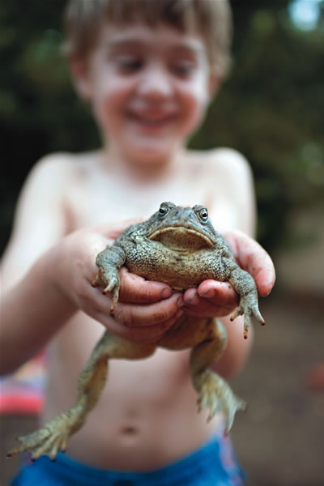
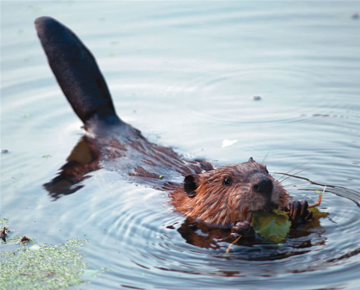
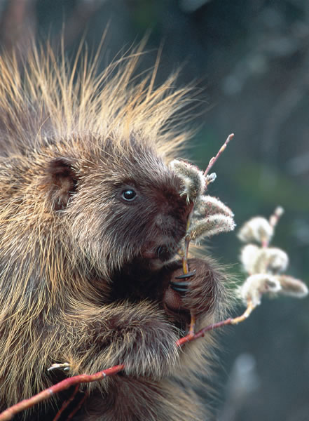
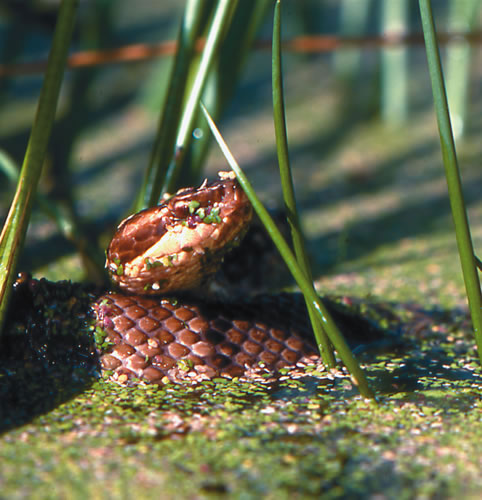
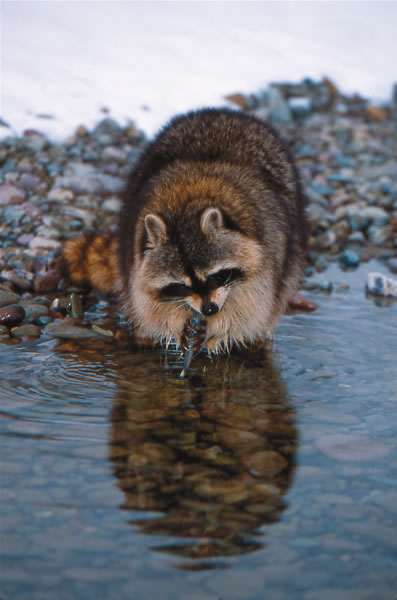

When a bee buzzes, it’s getting ready to sting you. There’s no telling where I got that notion as a child-from my imagination, most likely. But because I believed it, any sudden buzzing would toss me into a blind terror. Heart leaping to my throat, the metallic taste of fear at the back of my mouth, I’d run pell-mell away from that dreaded sound as fast as my little legs could carry me. All the while, I was convinced, a crazed human-hating bee followed in hot pursuit barely more than a stinger’s length away.
Of course, I know now there are countless buzzing insects, and although some do indeed buzz to warn off intruders, relatively few can actually sting-and fewer still are inclined to do so even when provoked.
But to tell you the truth, an unexpected buzzzz from an unnoticed insect still sends a jolt of adrenaline coursing through my veins.
That’s the trouble with long-held or oft-repeated myths, half-truths and other misbegotten beliefs. They tend to persist, despite common sense or scientific knowledge to the contrary. Here are some examples, with explanations.
“If you touch a toad, you’ll get warts.” Of course we all know it’s not true. But have you ever picked up a toad without the wart story coming to mind? Those lumps on a toad’s body do look a lot like warts. And that liquid that oozes from the toad’s skin if you grasp it too firmly ... eck.
Actually, that liquid is a poison, and it does come from the toad’s warty skin and from the two largest lumps-called parotoid glands-located just behind the amphibian’s eyes. But the toxin is merely a defense mechanism, emitted by the glands only under outside pressure-such as that from a would-be toad-eater’s unsuspecting mouth. Most animals immediately spit toads out, though hawks and snakes gobble them with apparent impunity. Raccoons and skunks eat toads after batting them around on the ground to release and rub off the poison.
Viruses-not toad secretions-cause warts. The toxin can, however, cause a local burning irritation if you handle a toad and then touch your eyes or mouth. That’s why you should always wash your hands after holding a toad.
“Beavers pack mud with their tails.” You can probably blame Walt Disney’s “Silly Symphonies” cartoons for this one. In a typical scene of idyllic natural industry, hard hat-wearing beavers merrily fling globs of mud from one worker’s tail to the next-production-line style-while the busy guys at the end of the line pat mud in place on the dam, using their tails as trowels. Meanwhile, bluebirds whistle with pursed beaks, ducks snatch bug-eyed worms from the soil, and not-quite-hatched chicken eggs stagger about on little pairs of legs, like tiny Humpty Dumptys.
Back to reality. The truth of the matter is that when beavers pack mud they use their forepaws. This is not to say, however, that the beaver’s paddle-shaped tail goes unused-quite the contrary.
In the water, a beaver uses its tail as a rudder for steering and diving. On land, its tail serves nicely as a prop or stabilizer, a sort of portable chair, as the toothy vegetarian sits back and gnaws on trees. Another use of the beaver’s tail is as an alarm: Whap! A sharp slap of the scaly tail on water sends a surprisingly loud, long-range warning to other members of the beaver’s colony. Rich in fat, the beaver’s tail also stores emergency nutrition for lean times. And the tail’s elaborate network of veins and blood vessels helps regulate the animal’s temperature, acting as a heat exchanger to cool the animal in hot weather and to reduce heat loss in winter.
Pack mud? Nah, a beaver’s tail has much more important work to do.
“Bumblebees can’t sting.” It’s the general good nature of the portly yellow-and-black-striped bumbler that’s behind this myth. Given a bed of nectar- and pollen-rich flowers, the noisy but mild-mannered bumblebee is much too busy gathering food to bother with the likes of a bumbling human. Wade through a field of flowering clover virtually carpeted with foraging bumblebees, and your chances of being stung are almost nil.
But if you wander too close to a bumblebee nest-that’s a different matter. Female bumblebees, like the females of any stinging insect species, are equipped with a modified ovipositor, a tube for laying eggs, that also serves as a stinger. The bees can and certainly will sting-repeatedly-to defend their colony.
Fortunately, bumblebees tend to build their nests in out-of-the-way places in the soil, in clumps of dense grass or in wall insulation. You’re not likely to stumble upon one often. But if you do, be careful or you may discover the truth about bumblebees the (ouch!) hard way.
“Porcupines can shoot their quills at humans and would-be predators.” No, but the portly pincushions can raise and lower their quills, and the meaning is clear: quills down, no problem; quills up, beware. It’s a warning that’s worth heeding.
A porcupine is armed with some 30,000 quills-about 140 per square inch-covering its back, cheeks, legs and tail. The quills are actually modified hairs, but you wouldn’t want to run your fingers through them. Stiff and sharp-pointed, they average about 2 to 3 inches long and are only loosely attached to the porcupine’s body. Every quill is tipped with a series of microscopic ringlike scales, each of which has a raised edge that acts much like a fish hook’s barb-try to pull the quill out, and the edges dig in. To make matters worse, the quills expand in response to the victim’s body heat and work themselves deeper into flesh.
More often than not, it’s a would-be predator’s face and mouth that bear the brunt of the porcupine’s spiked defense. Faced with danger, the rodent hunches low, raises its quills and turns its backside to the attacker. A quick lash of the porcupine’s tail or an imprudent poke of the intruder’s nose is all it takes to plant a face full of quills. But contact is required.
The notion that porcupines can actually launch their quills like missiles goes back to at least the first century, when Pliny the Elder (as translated by Philemon Holland in 1601) wrote: “The porkpen hath the longer sharp pointed quilles, and those, when he stretcheth his skin, he sendeth and shooteth from him.”
Honestly, quill-throwing is quite unnecessary when you’re a porcupine-the spikes alone are protection enough. Though slow-moving, clumsy and not exactly the brightest button in nature’s jar, a porcupine can waddle through life in relative security thanks to its ever-so-effective prickly armor.
“A snake in the water can’t bite.” My apologies if you’ve taken comfort in this notion while splashing around in the old swimming hole. Water snakes certainly can open their mouths without drowning while swimming-and regularly do so as they hunt for frogs, fish, tadpoles, salamanders and other aquatic prey. I’m afraid the news gets worse, too: Most water snakes are armed with sharp teeth-the better to grab their slippery quarry-and many will readily bite when provoked; never mind that you’ve done so unintentionally.
If you live in the Southeast or lower Midwest, be especially wary of any snake swimming with its head held well above water. Among aquatic snakes, that’s a tell-tale characteristic of the venomous cottonmouth, aka the water moccasin. Bites from water snakes can be painful, but the cottonmouth’s is potentially deadly.
Now for the good news: Snakes-including the swimming types-don’t want anything to do with humans. Most of the time they’ll quickly slither away at the first sign of a two-legger. If you’re reasonably cautious in turn, you’ll have nothing to worry about.
Come on: Last one in is a rotten apple!
“Moss grows on the north side of trees and therefore can be used as a compass.” In part, this one’s no myth at all; moss definitely grows on the north side of trees. The only problem-especially for backwoods navigators-is that moss also can and does grow on the east, west and south sides of trees, and/or any point in between, depending on where the tree lives. So moss doesn’t make an especially reliable compass.
Mosses are bryophytes-plants that lack the water-conducting roots and inner vessels, or vascular system, that most plants have to transport water and nutrients to their tissues. Instead, mosses take up water through capillary action and pass the moisture from cell to cell, absorbing it much like a sponge. Because their leaves are extraordinarily thin-only one cell thick in some species-most mosses that get too much solar exposure and/or too little water will dry up and die in a hurry.
It makes sense, then, that in the Northern Hemisphere, where the southern side of a tree gets the most sunshine and the northern side the least, moss would tend to grow consistently on the shady, moist northern side. But several factors complicate matters: Neighboring trees and vegetation may cast shade on a particular tree’s other sides; a rainy climate may keep a tree trunk’s entire lower circumference perpetually moist; and a dry climate or a wind-swept exposure may prevent moss from growing on any side of a tree. So it is, for example, that in the arid Southwest a turned-around hiker may find no moss at all to help point the way home; while in the maritime forests of the Pacific Northwest, moss may completely envelop a tree’s lower extremities, providing little more information on which direction is north than you might discern from a quick game of eeny-meenie-mynie-moe.
A variety of other natural indicators can serve as reliable guides-the sun’s position and movement in the sky at varying times of the day and year; the direction of the prevailing wind; the direction in which hills, ridges or streams tend to run in your area; the North Star at night. But moss as a navigational tool? Don’t bet your GPS on it.
“Raccoons wash their food before eating it.” Of course this must be true; after all, haven’t you seen wildlife films? There’s the raccoon, there’s the stream, and clearly the animal is dunking its food into the water. People have witnessed this behavior for centuries, and the notion is attached to the critter’s identity. The German name for raccoon, wasberen, means “wash bear.” The latter half of its scientific name, Procyon lotor, means “washer.”
Indeed, most scientists subscribed to the food-cleaning theory until early in the 20th century, when the notion was discarded in favor of the idea that raccoons lack salivary glands, and thus need to moisten their food before swallowing and digesting it. This idea persisted until the early 1960s, when researchers found that raccoons do indeed produce saliva. Nowadays, most biologists agree that the raccoon’s water-dunking behavior is associated primarily with locating aquatic prey-a relatively small part of its diet-and that the animal doesn’t willfully wash food in the sense that we do.
Raccoons are true omnivores-eating everything from greens, berries and nuts, to garbage, bird eggs and baby rabbits. They gobble such meals on the spot, no washing involved. In spring and early summer, however, raccoons with access to streams or ponds also feed on crayfish, frogs and other aquatic critters. The raccoon searches underwater with its sensitive five-fingered forepaws, feeling and handling every object until it encounters a potential meal. The raccoon retrieves the object and examines it, turning it this way and that, sniffs it, dunks it a few times, then re-examines it, and maybe dunks it and/or sniffs it some more, before deciding whether to eat it. Although sand and grit may be removed in the process, this behavior probably doesn’t have as much to do with washing food as it does with simply finding and feeling it out.
One thing’s for sure: The raccoon that steals my just-ripe sweet corn every summer never takes time to drag the cobs to a stream for a quick rinse.
|
 CORBIS Will this boy get warts? The truth is that touching toads won’t give you warts, but it’s hard not to let the thought cross your mind. |
 TOM UHLMAN A beaver surfaces and proudly shows off its multipurpose tail. Contrary to what you may have seen in cartoons, beavers do not use their tails to pack mud for their dams. |
 MICHAEL QUINTON/MINDEN PICTURES The average portly porcupine has about 30,000 quills, which it can raise or lower, but not shoot. This spiked defense is one of the best in nature. |
|
 LYNN M. STONE Found in the Southeast and lower Midwest, the poisonous cottonmouth swims with its head held well above water. |
 LYNN M. STONE Though it may seem that raccoons prefer to wash their food before meals, they’re actually just locating and identifying aquatic prey. |
|